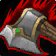

星界转移
90 秒（位面旅行者）· 持续 12 秒
所有伤害 −40%。全本唯一的大减伤，按路线里的固定高压点预留，转好也别随手交在普通小怪上。
元素萨满没有免疫，全本只靠星界转移（90 秒）一张大减伤，按固定的高压点预留：开场鲜血献祭、拉维啃腐肉、神选者段的感染和剧毒涌动、祖尔加的切骨者。土元素配始源羁绊加 15% 血量上限，补星界转移顾不到的那一下。开场的麻痹射击切幽魂之狼就能清掉。
四张手牌管住全本，外加一条硬限制和四个必断读条。
所有伤害 −40%。全本唯一的大减伤，按路线里的固定高压点预留，转好也别随手交在普通小怪上。
点了始源羁绊后不再嘲讽，改成最大生命值 +15%，让单次重伤更好抬。
雷霆之爪让变狼时移除诱捕效果，带减速的减益能自己解。
打断成功后 12 秒受到的法术伤害 −15%。这本承伤大多是自然伤害（鲜血献祭、振响、切骨者是物理，风幕减不了），风剪转好就交给下方四个读条。
一场 +23 限时实录（展示真实冷却节奏，非每波强制照搬；具体取舍见下方路线）。
看到什么 → 按什么 → 为什么。带「必做」标签的高亮行是每把必做的关键动作。伤害数字是 +23 实测（含被吸收的部分），层数越高越大。

取自 +23 限时录像的元素天赋，英雄天赋先知。复制字符串，在游戏天赋界面点「导入」。
CYQAAAAAAAAAAAAAAAAAAAAAAAAAAAzMbbzMGjZZbZMmhZAAAAgFzsBDYAzGTgZBAmtZmZwCaDzYmlZmZmZMLzyMzywYmZBAYAgZGDDD
这四个防御天赋不要动
常见可换：幽魂步 ↔ 阵风；静电充能、净化术 ↔ 陷地图腾、喷流、图腾投射。